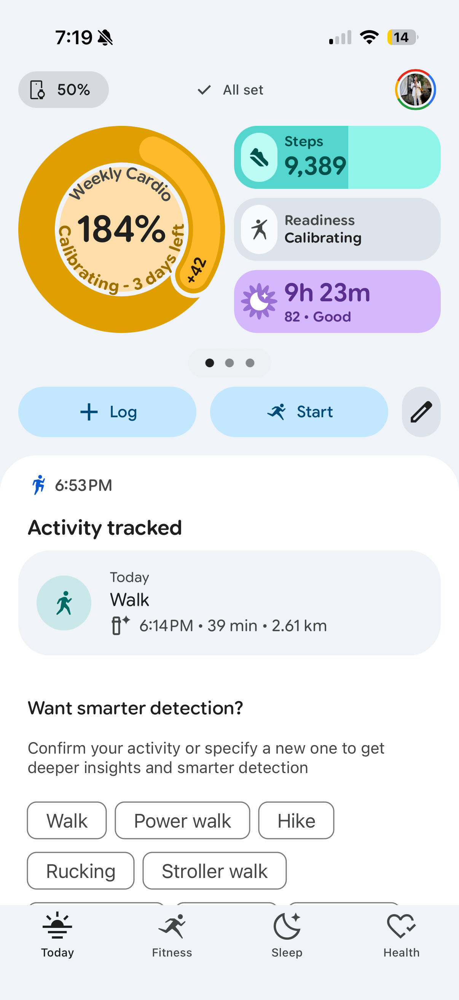
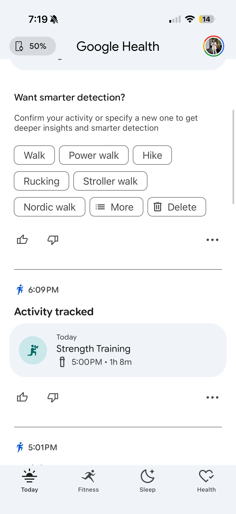
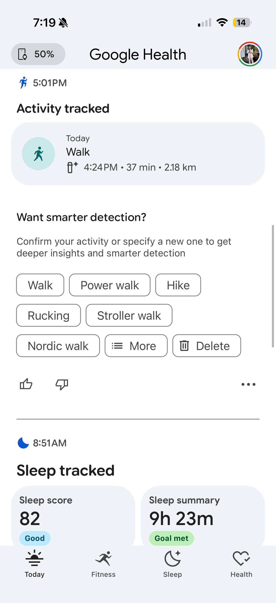
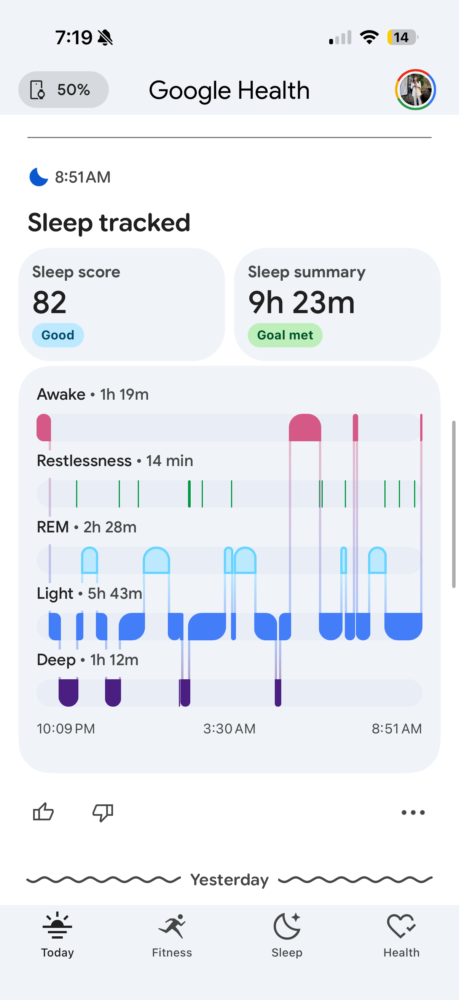

I redesigned Google Health around the questions people open it to answer.
After Google replaced Fitbit with Google Health, daily status became harder to find inside a dense activity feed. In one week, I audited the shipped experience, defined five redesign principles, and built a coded Material 3 prototype.
Personal project, not affiliated with Google. Every "before" is my screenshot; every claim, a cited law or a labeled hypothesis.

Solo: product audit, IA, interaction, visual, motion, prototyping, frontend
July 2026 · ~1 week of evenings
HTML/CSS/JS · Material 3 Expressive · Claude Code
Full app shell: 4 tabs, activity detail, Log flow, detection, system states
Google force-replaced the Fitbit app with Google Health in May 2026. It was review-bombed; Google shipped a 39-item fix roadmap within a day. I use it daily. The frustration, and every screenshot here, is first-hand.
No access to Google's research or metrics, so nothing here claims impact. The redesign leans on the two things nobody can argue with: Google's own design system and named UX laws. Anything unmeasurable is labeled a hypothesis. Assume smart people built the original under constraints I can't see.
the internet noticed before I did.
I wanted my step count. I got a detection log, a percentage that admitted it was made up, and the same eight chips after every walk. I wasn't alone:
"Why is the biggest button on the screen for AI questions? You're a fitness app; the biggest button should be to add an activity."
"Several screens have become Walls of Words, bombarding the senses with too much stuff. Impenetrable. Off-putting."
"Google's single-minded focus on AI has ruined what was a much better experience… a huge step back in usability."
To be fair: the visual craft is genuinely good: reviewers called it "gorgeous," and the sleep visualization earned a 9/10 from the app's own harshest critic. That's exactly what makes it interesting: this isn't a paint problem. It's an information-architecture problem, which means it can be argued with principles, not taste.
four screenshots, four broken laws.
My own screenshots, July 10, 2026.

1 2 3
1
1 2- 1184% of a target that doesn't exist yet.
- 2Status hidden behind carousel dots.
- 3Three actions, none primary.
- 4"Readiness"? "Cardio load"? Never defined anywhere. My biggest pet peeve.
- 1Eight choices for a yes/no question.
- 2Delete dressed as a suggestion. One mis-tap kills the workout.
- 3Chips + thumbs + menu: three feedback systems.
- 1Asks after every activity, never learns. Banner blindness, earned.
- 1Green means three different things.
- 2Two screens of scrolling to see one shape.
five rules the redesign never breaks.
Show status before history
The home screen answers "how am I doing?" in one glance. History demotes to a timeline.
Give each fact one clear home
Sleep lives in exactly one place per screen. Duplicates are deleted, not restyled.
Ask one question at a time
Detection asks a binary question, learns, and promises to ask less. The taxonomy hides behind "edit".
Design honest loading and calibration states
Loading and calibrating are designed states with visible progress and an arrival date, never a fake number.
Work within Material 3 instead of inventing another system
Strict Material 3 Expressive: its tokens, type scale, 48dp targets, springs, and shapes. No invented system.
screen by screen, before and after.
Big numerals, generous space, one accent that always means "act here." Light by default, dark on tap. Flip any panel back to the original.
the home screen
the detection flow
Want smarter detection?
Confirm your activity or specify a new one to get deeper insights and smarter detection
Eight choices become two, asked once. Rename hides behind "edit"; delete moves to the detail view, styled destructive.
sleep, one picture
the 184% problem
The earned load stays; the fake percentage waits for a real target. Calibration becomes a loop worth closing. And the jargon (readiness, cardio load, zone minutes) now explains itself in plain words, one tap away.
three decisions I sweated
First pass: M3's light baseline. Correct, and lifeless. Dark became the identity: every M3E rule kept, one volt accent meaning "act here". Light ships too: flat neutral canvas, white cards, the accent swapped for black, because a health app gets read in morning sun.
Trade-off: no shadows on dark. Elevation comes from M3's surface ladder.
Overflow menu: buried. Long-press: undiscoverable. Winner: the detail view, styled destructive. Deliberate, un-mis-tappable.
Trade-off: deleting takes two taps, the price of never losing a workout.
Readiness is the smartest number, and blank during calibration. Steps won: always true, always actionable. Readiness reclaims the hero when it has something to say.
Trade-off: the most differentiated metric sits below the most reliable one. On purpose.
strictly google's rules, receipts attached.
"Follow the design system" is easy to say. Here's what it means, mechanically.
one accent, tokenized
Neutral dark surfaces carry zero meaning; color is reserved for roles. Volt is the only action color in the entire app. If it glows, you can act on it.
the M3 type scale, verbatim
Roboto Flex on Material's exact ladder. Hierarchy comes from the scale, not from inventing sizes.
expressive motion, two springs
M3 Expressive replaces easing curves with spring physics: spatial springs overshoot (hero moments), effect springs settle clean. Every transition in the prototype uses one of these two.
48dp or it doesn't ship
Material's minimum touch target is 48×48dp. The original's confirm chips missed it; so did my first pass. I held myself to the same rule.
36px visual pill, invisible 48dp hit area (dashed). Anything smaller is a mis-tap waiting to happen, especially mid-walk.
built, not mocked. tap it.
Not a picture of an app. An app-shaped thing that runs. Switch tabs, open a walk, confirm a detection, log from the volt button.
Hand-written HTML/CSS/JS, no framework, same as this site. Open it full-screen →
hypotheses, not victory laps.
An unsolicited redesign can't claim outcomes. It can commit to measurable predictions:
Users answer "how am I doing today?" from the redesigned home in under 3 seconds, without scrolling.
Test: 5-second test + first-click, before vs after · metric: time-to-answer, scroll events before first fixation on status
One binary question raises confirmation rates and stops the prompt from being ignored as noise.
Test: A/B chip-cloud vs confirm-strip · metric: confirm rate, dismiss/ignore rate, model-correction quality over 4 weeks
Framing calibration as visible progress ("4 of 7 nights") increases wear-through-calibration versus a dead "calibrating" label.
Test: cohort comparison, new-device users · metric: D7 wear rate during calibration window
Fixing the top three roadmap complaints (glanceability, prompts, customization) moves store sentiment measurably.
Test: release-over-release review mining · metric: rating trend, complaint-theme frequency
- Why the feed is a log: there may be an engagement or AI-Coach strategy I'm arguing against blind.
- The Premium funnel: the AI Coach is paid, and my "quiet" detection strip removes one of its loudest surfaces.
- Sensor truth: maybe cardio load genuinely can't show a partial target sooner. (Though then it shouldn't show 184%.)
- The roadmap: some of this may already be in flight inside Google. Their 39-item list overlaps my audit heavily, which I take as validation, not competition.
what I learned.
The fix was subtraction, not addition.
The redesign adds no features. It deletes duplicates and hides the taxonomy behind one honest question. Less app, more answer.
Constraints are the argument.
Leaning on Google's own system and named laws made the case impossible to wave off as taste. The rules were already theirs.
same pixels, different priorities.
Google Health isn't badly drawn. It's badly prioritized. The redesign reorders what already exists around the one question people open the app to ask.